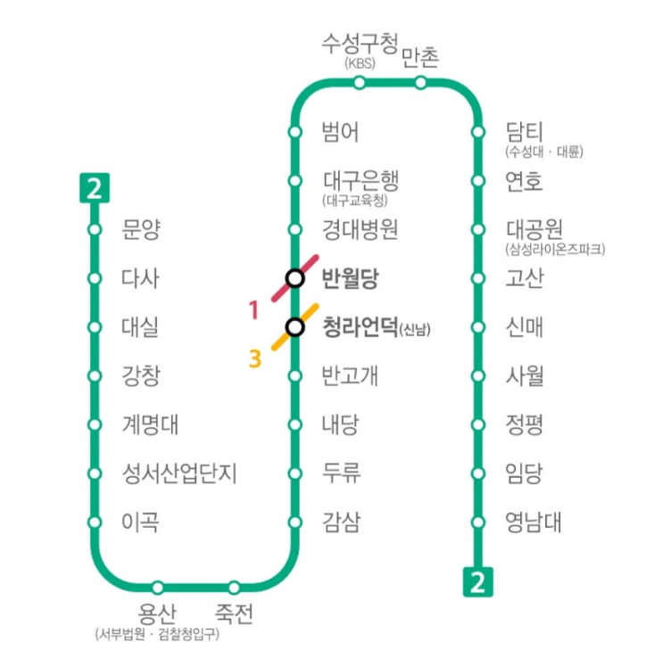

DAEGU METRO LINE 2
대구 도시철도 2호선
대공원역에서 하차해 5번 출구로 나오면 삼성 라이온즈 파크까지 도보 약 5분입니다.
VISIT SAMSUNG LIONS PARK
지하철과 버스로 편하게 찾아오세요.
PUBLIC TRANSPORT
경기 당일에는 주변 교통 상황과 운행 정보를 확인해 주세요.
DAEGU METRO LINE 2
대공원역에서 하차해 5번 출구로 나오면 삼성 라이온즈 파크까지 도보 약 5분입니다.
LOCAL BUS
삼성라이온즈파크 앞 정류장에서 하차하세요. 이용 가능한 간선 노선은 309, 399, 449, 509, 609 등입니다.
DAEGU METRO MAP
2호선 대공원역에서 내리면 구장에 도착할 수 있어요.

FIND YOUR ROUTE
네이버 지도와 카카오맵 중 편리한 지도를 선택해 경로를 확인할 수 있습니다.